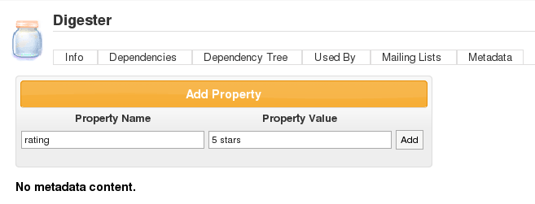
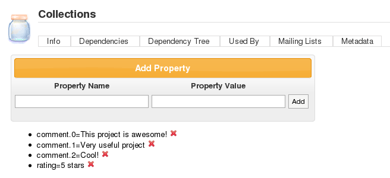

Browsing
Permissions
The user can only browse those repositories where the user is an observer or a manager. If the user does not have permission to access any repository, a message saying "You have access to no repositories. Ask your system administrator for access" will be displayed.
Repository Browse Layout
The current layout of the repositories in Repository Browse uses the Maven 2 layout, which is the groupId, artifactId and version. When the version is clicked, the Artifact Info page (see the next section) will be displayed. There is currently an issue with regard to Maven 1 artifacts, see http://jira.codehaus.org/browse/MRM-585.
Artifact Info
Items in the repositories are hyperlinked allowing you easy access to view more information. By clicking on the Group ID or Artifact ID you will be taken to the repository browser. The Artifact Info page is divided into six views:
1. Info. Basic information about the artifact is displayed here. These are the groupId, artifactId, version and packaging. A dependency pom snippet is also available, which a user can just copy and paste in a pom file to declare the artifact as a dependency of the project.
2. Dependencies. The dependencies of the artifact will be listed here. The user can easily navigate to a specific dependency by clicking on the groupId, artifactId, or version link. The scope of the dependency is also shown.
3. Dependency Tree. The dependencies of the artifact are displayed in a tree-like view, which can also be navigated.
4. Used By. Lists all the artifacts in the repository which use this artifact.
5. Mailing Lists. The project mailing lists available in the artifact's pom are displayed here.
6. Download. Clicking on this link will download the artifact to your local machine.
Downloading Artifacts
Artifacts can be downloaded from the artifact info page. All files, except for the metadata.xml files, that are associated with the artifact are available in the download box. The size of the files in bytes are displayed at the right section of the download box.
Note: Upon downloading the artifact, you will be asked to enter your username and password for the repository where the artifact will be downloaded from. Only users with Global Repository Manager, Repository Manager, or Repository Observer roles for that repository can download the artifact.
Metadata
In 1.4, the new repository API or "metadata repository" was introduced. One of the essential features of the metadata repository is to be able to add generic information (such as ratings, comments, etc.) about a project through facets. These facets are stored in the project properties file in the metadata repository.
Only users with Repository Manager roles for the repository where the artifact is located can add or delete properties in the metadata via the Metadata tab in Artifact Browse.
To add a property in the metadata, just specify a Property Name and a Property Value in the respective text fields then click Add.
To delete a property, just click the corresponding delete icon (X) of the specific property you want to delete. A "Property successfully deleted." message should be displayed after a successful delete.
